Dlaczego to interdyscyplinarne myślenie da Ci przewagę w świecie jutra.
Świat zmienia się szybciej niż szkolne programy i nazwy zawodów. Sztuczna inteligencja, nowe technologie oraz nadchodzące przełomy naukowe sprawiają, że nie da się dziś z pełną pewnością wskazać jednej „bezpiecznej” ścieżki kariery.
Najlepszym przygotowaniem do przyszłości jest ciekawość, zdolność łączenia różnych dziedzin i rozumienie podstaw nauki.
Prelekcja otwarta dla każdego uczestnika aMFIteatru! Szczególnie polecamy ją osobom, które wciąż szukają swojej ścieżki i zastanawiają się, jak mądrze połączyć humanistyczną wyobraźnię ze ścisłym i technologicznym rygorem.